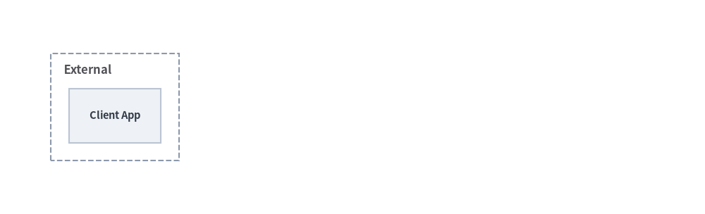
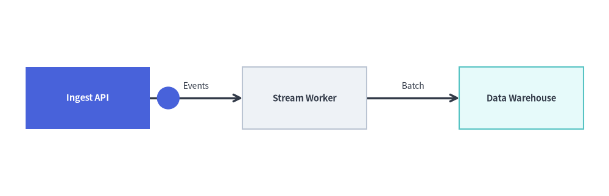

グラフのアニメーション
drawlib.graph に含まれる宣言的な 5 つの自動レイアウトグラフソルバー（ArchitectureGraph、LayerGraph、TreeGraph、RadialGraph、GridGraph）はすべて純粋な座標・レイアウト計算機であり、**パターン B（get_layout() で一度だけ座標を解決し、変更・アニメーション描画する）**と自然に組み合わせて使用できます。
Source Code
from drawlib.anim import Animation
from drawlib.canvas import save, setup
from drawlib.graph import TreeGraph
from drawlib.icons import phosphor
from drawlib.lines import lines
from drawlib.shapes import rectangle
from drawlib.styles import Styles
setup(width=124, height=52)
anim = Animation(fps=2.0)
# 1. Declare full tree topology once & lock 100% of coordinates via get_layout()
g = TreeGraph(
root="gw",
direction="LR",
default_node_width=26.0,
default_node_height=12.5,
)
g.node("gw")
g.child("gw", "auth")
g.child("gw", "bill")
g.child("auth", "cache")
g.child("bill", "ledger")
layout = g.get_layout(margin=5.0)
node_meta = {
"gw": ("\nAPI Gateway", Styles.PrimaryNeutral, phosphor.shield_check),
"auth": ("\nAuth Service", Styles.PrimaryNeutral, phosphor.lock_key),
"bill": ("\nBilling API", Styles.SecondaryNeutral, phosphor.credit_card),
"cache": ("\nToken Cache", Styles.Neutral, phosphor.lightning),
"ledger": ("\nLedger DB", Styles.Neutral, phosphor.database),
}
def draw_step(visible: set[str], focal: str) -> None:
for e in layout.edges:
if e.src in visible and e.dst in visible:
lines(e.points, arrow_head="->", style=Styles.DarkBold)
for nid in visible:
label, base_st, icon_fn = node_meta[nid]
nl = layout[nid]
is_focal = nid == focal
box_st = Styles.PrimaryFlat if is_focal else base_st
txt_st = (Styles.WhiteBold if is_focal else Styles.DarkBold).patch(text_size=10.5)
ic_st = Styles.White if is_focal else Styles.PrimaryFlat
rectangle(nl.xy, width=nl.width, height=nl.height, style=box_st, text=label, text_style=txt_st)
icon_fn((nl.x, nl.y + 2.4), width=4.2, style=ic_st)
# Frame 1: Root node at its final auto-solved position
with anim.frame(duration=0.7):
draw_step({"gw"}, focal="gw")
# Frame 2: Reveal Tier 1 services (Auth Service highlighted)
with anim.frame(duration=0.7):
draw_step({"gw", "auth", "bill"}, focal="auth")
# Frame 3: Reveal Leaf data stores (Ledger DB highlighted)
with anim.frame(duration=0.7):
draw_step({"gw", "auth", "bill", "cache", "ledger"}, focal="ledger")
# Frame 4: Settled full hierarchy with Root Gateway as focal node
with anim.frame(duration=2.5):
draw_step({"gw", "auth", "bill", "cache", "ledger"}, focal="gw")
save()
- トポロジ全体の座標を一度だけ解決する (
layout = g.get_layout()): アニメーションループの前にすべてのノード（g.node()）、クラスタ（g.cluster()/g.group()）、エッジ（g.edge()）を一度だけ登録し、layout = g.get_layout(margin=...)を呼び出します。 - ダイアグラム要素を変更するか、
edge_layout.pointsに沿ってアニメーション化する:- 方法 1 (
drawlib.diagrams): ループの外側でlayoutの座標（nl.xy、nl.local_xy、cl.bottom_left）にArchitectureDiagramやFlowDiagramのノード・グループを一度だけ配置し、with anim.frame():内で.showや.style/.card_styleを変更してからd.draw()を呼び出します。 - 方法 2 (
drawlib.shapesとdrawlib.lines): 表示対象のノード（layout[id].xy）と折れ線（edge_layout.points）を描画するか、get_intermediate_path_points()を使ってedge_layout.pointsに沿ってデータパケットを移動させます。
- 方法 1 (
（drawlib.diagrams の座標制御型ダイアグラムについては、ダイアグラムのアニメーションを参照してください。）
1. 決定論的なレイアウト固定 (layout = g.get_layout())
従来のツールで自動レイアウトグラフをアニメーション化する際の大きな課題は**レイアウトジャンプ（位置ずれ）**です。第 2 フレームでノードを追加するとレイアウトエンジンが全座標を再計算してしまい、第 1 フレームのノード位置が予期せず移動してしまいます。
Drawlib は座標解決（g.get_layout()）とフレームごとの描画を分離することで、このレイアウトジャンプを解消しています。
- アニメーションループの外側で
layout = g.get_layout(width=None, height=None, margin=10.0)を一度だけ呼び出すことで、トポロジ全体のすべてのノード中心座標（layout[id].xy/.local_xy）、クラスタの境界ボックス（layout[cid].bottom_left/.size）、直交エッジ軌道（edge_layout.points）が解決・固定されます。 FlowDiagramやArchitectureDiagramで描画する場合、node.show = Falseを設定すると非表示ノードがスキップされると同時にそのノードに接続されたエッジも自動的に非表示になるため、両端のノードが表示されたタイミングでエッジが自然に現れます。
| レイアウト / ダイアグラムのプロパティ | アニメーションにおける役割 |
|---|---|
layout = g.get_layout(margin=...) |
アニメーションループ開始前に、すべてのノード・クラスタ・エッジ座標を一度だけ計算して固定します。 |
node.show / group.show / edge.show |
配置座標を 100% 固定したまま、layout 座標に配置された FlowDiagram や ArchitectureDiagram 要素の表示・非表示をフレームごとに切り替えます。 |
node.style / node.card_style / node.text_style |
新たに表示されたステップやアクティブなステップを Styles.PrimaryFlat（テキストは Styles.WhiteBold）で強調し、前のステップを Styles.PrimaryNeutral や Styles.Neutral に落ち着かせます。 |
edge_layout.points |
自動ルーティング済みの完全な折れ線座標列（[src_port, *waypoints, dst_port]）。lines(e.points) での描画や get_intermediate_path_points(e.points, num=...) によるパケットアニメーションにそのまま渡せます。 |
2. パイプラインのステップバイステップ段階表示 (LayerGraph + FlowDiagram)
LayerGraph.get_layout() で水平方向のランク座標を一度解決した後、FlowDiagram 内の xy=layout[nid].xy に Process ノードを配置します。フレームループ内で fn.show = (i <= step) の切り替えと fn.style の更新を行うことで、水平レイアウトを固定したまま各パイプライン段階を順に表示できます。
from drawlib.anim import Animation
from drawlib.canvas import save, setup
from drawlib.diagrams.flow import FlowDiagram, Process
from drawlib.graph import LayerGraph
from drawlib.styles import Styles
setup(width=124, height=34)
anim = Animation(fps=1.5)
# Step 1: Solve pipeline coordinates once via LayerGraph.get_layout()
g = LayerGraph(
direction="LR",
rank_sep=8.0,
default_node_width=23.0,
default_node_height=11.5,
)
stages = [
("edge", "Edge Router", 0),
("auth", "Auth Guard", 1),
("core", "Core API", 2),
("db", "Primary DB", 3),
]
for nid, _, layer_idx in stages:
g.node(nid, layer=layer_idx)
g.edge("edge", "auth")
g.edge("auth", "core")
g.edge("core", "db")
layout = g.get_layout(margin=5.0)
# Step 2: Register Process nodes at locked layout[nid].xy coordinates
fd = FlowDiagram(
node_style=Styles.PrimaryNeutral.patch(text_size=10.5),
edge_style=Styles.DarkBold,
edge_text_style=Styles.Dark.patch(text_size=10.0),
)
flow_nodes = []
for nid, label, _ in stages:
nl = layout[nid]
flow_nodes.append(fd.add(Process(label, width=nl.width, height=nl.height), xy=nl.xy))
for i in range(len(flow_nodes) - 1):
fd.connect(flow_nodes[i], flow_nodes[i + 1])
# Step 3: Reveal stages one by one without layout jumping
for step in range(len(flow_nodes)):
for i, fn in enumerate(flow_nodes):
fn.show = (i <= step)
fn.style = Styles.PrimaryFlat if i == step else Styles.PrimaryNeutral
fn.text_style = (Styles.WhiteBold if i == step else Styles.DarkBold).patch(text_size=10.5)
is_last = (step == len(flow_nodes) - 1)
with anim.frame(duration=2.5 if is_last else 0.8):
fd.draw()
save()
3. クラスタとエッジの段階的表示 (ArchitectureGraph + ArchitectureDiagram)
ArchitectureGraph で layout = g.get_layout() を呼び出すと、外側コンテナの境界ボックス（cl.bottom_left、cl.width、cl.height）と子ノードの相対座標（nl.local_xy）の両方が計算されます。これらの固定座標を使って ArchitectureDiagram を構築することで、クラウドゾーン（group.show）、サービスノード（node.show）、アクティブなリクエスト経路（edge.style）を段階的に表示できます。
from drawlib.anim import Animation
from drawlib.canvas import save, setup
from drawlib.diagrams.architecture import ArchitectureDiagram, Node, NodeGroup
from drawlib.graph import ArchitectureGraph
from drawlib.styles import Styles
setup(width=138, height=42)
anim = Animation(fps=1.5)
# Step 1: Solve multi-zone container and node coordinates once
g = ArchitectureGraph(
direction="LR",
container_sep=6.0,
default_node_width=18.0,
default_node_height=10.5,
)
g.cluster("ext", ["client"], pos="left", padding=3.5)
g.node("client")
g.cluster("app", ["gw", "worker"], pos="center", padding=4.0)
g.node("gw")
g.node("worker")
g.cluster("data", ["db"], pos="right", padding=3.5)
g.node("db")
g.edge("client", "gw")
g.edge("gw", "worker")
g.edge("worker", "db")
layout = g.get_layout()
# Step 2: Populate ArchitectureDiagram at solved layout coordinates
d = ArchitectureDiagram(
node_style=Styles.PrimaryFlat,
node_text_style=Styles.DarkBold.patch(text_size=10.5),
edge_style=Styles.DarkBold,
edge_text_style=Styles.Dark.patch(text_size=10.0),
node_card_style=Styles.Neutral,
)
def make_group(cid: str, title: str, *, show: bool = True) -> NodeGroup:
cl = layout.clusters[cid]
return d.add(
NodeGroup(title=title, width=cl.width, height=cl.height, style=Styles.MutedDashed, show=show),
xy=cl.bottom_left,
)
def make_node(grp: NodeGroup, nid: str, label: str, card_st, txt_st, *, show: bool = True) -> Node:
nl = layout[nid]
return grp.add(
Node(
label,
width=nl.width,
height=nl.height,
card_style=card_st,
text_style=txt_st.patch(text_size=10.5),
show=show,
),
xy=nl.local_xy,
)
c_ext = make_group("ext", "External", show=True)
n_client = make_node(c_ext, "client", "Client App", Styles.Neutral, Styles.DarkBold, show=True)
c_app = make_group("app", "Compute VPC", show=False)
n_gw = make_node(c_app, "gw", "API Gateway", Styles.PrimaryFlat, Styles.WhiteBold, show=False)
n_worker = make_node(c_app, "worker", "Task Worker", Styles.PrimaryNeutral, Styles.DarkBold, show=False)
c_data = make_group("data", "Data Tier", show=False)
n_db = make_node(c_data, "db", "Primary DB", Styles.SecondaryNeutral, Styles.DarkBold, show=False)
e1 = d.connect(n_client, n_gw, label="HTTPS")
e2 = d.connect(n_gw, n_worker, label="Queue")
e3 = d.connect(n_worker, n_db, label="Write")
# Frame 1: External Client entry point
with anim.frame(duration=0.8):
d.draw()
# Frame 2: Reveal Compute VPC & API Gateway with active incoming edge
c_app.show = True
n_gw.show = True
e1.style = Styles.PrimaryBold
with anim.frame(duration=0.8):
d.draw()
# Frame 3: Reveal Task Worker inside Compute VPC
e1.style = Styles.DarkBold
n_gw.card_style = Styles.PrimaryNeutral
n_gw.text_style = Styles.DarkBold.patch(text_size=10.5)
n_worker.show = True
n_worker.card_style = Styles.PrimaryFlat
n_worker.text_style = Styles.WhiteBold.patch(text_size=10.5)
e2.style = Styles.PrimaryBold
with anim.frame(duration=0.8):
d.draw()
# Frame 4: Reveal Data Tier and complete architecture (hold final frame)
e2.style = Styles.DarkBold
n_worker.card_style = Styles.PrimaryNeutral
n_worker.text_style = Styles.DarkBold.patch(text_size=10.5)
c_data.show = True
n_db.show = True
n_gw.card_style = Styles.PrimaryFlat
n_gw.text_style = Styles.WhiteBold.patch(text_size=10.5)
e3.style = Styles.PrimaryBold
with anim.frame(duration=2.5):
d.draw()
save()

4. 自動ルーティングされたエッジ上のパケットアニメーション (g.get_layout() と edge_layout.points)
layout.edges 内の各 EdgeLayout は、ノード境界間を結ぶ自動ルーティング済みの完全な折れ線軌道を表す edge_layout.points: list[tuple[float, float]]（[src_port, *waypoints, dst_port]）を公開しています。
edge_layout.points を get_intermediate_path_points(edge_layout.points, num=..., include_ends=True) に渡すことで、自動ルーティングされたグラフエッジに沿って滑らかに移動するデータパケット（circle）をアニメーション化できます。
from drawlib.anim import Animation
from drawlib.canvas import save, setup
from drawlib.graph import LayerGraph
from drawlib.lines import lines
from drawlib.math import get_intermediate_path_points
from drawlib.shapes import circle, rectangle
from drawlib.styles import Styles
from drawlib.text import text
setup(width=118, height=38)
anim = Animation(fps=10.0)
g = LayerGraph(
direction="LR",
default_node_width=24.0,
default_node_height=12.0,
)
g.node("ingest", layer=0)
g.node("worker", layer=1)
g.node("store", layer=2)
g.edge("ingest", "worker")
g.edge("worker", "store")
# 1. Solve layout once to inspect auto-routed edge polylines
layout = g.get_layout(margin=5.0)
pts_e0 = get_intermediate_path_points(layout.edges[0].points, num=4, include_ends=False)
pts_e1 = get_intermediate_path_points(layout.edges[1].points, num=4, include_ends=False)
edge_labels = {("ingest", "worker"): "Events", ("worker", "store"): "Batch"}
base_nodes = [
("ingest", "Ingest API", Styles.PrimaryNeutral),
("worker", "Stream Worker", Styles.Neutral),
("store", "Data Warehouse", Styles.SecondaryNeutral),
]
def draw_pipeline(active_id: str | None = None) -> None:
for e in layout.edges:
lines(e.points, arrow_head="->", style=Styles.DarkBold)
lbl = edge_labels[(e.src, e.dst)]
text((e.mid_xy[0], e.mid_xy[1] + 2.4), lbl, style=Styles.Dark.patch(text_size=10.0))
for nid, label, base_st in base_nodes:
nl = layout[nid]
is_active = nid == active_id
st = Styles.PrimaryFlat if is_active else base_st
tst = (Styles.WhiteBold if is_active else Styles.DarkBold).patch(text_size=10.5)
rectangle(nl.xy, width=nl.width, height=nl.height, style=st, text=label, text_style=tst)
# 2. Hop 1: Packet travels along layout.edges[0].points
for pkt_xy in pts_e0:
with anim.frame(duration=0.12):
draw_pipeline(active_id="ingest")
circle(pkt_xy, radius=2.2, style=Styles.PrimaryFlat)
# 3. Hop 2: Highlight worker and move packet along layout.edges[1].points
for pkt_xy in pts_e1:
with anim.frame(duration=0.12):
draw_pipeline(active_id="worker")
circle(pkt_xy, radius=2.2, style=Styles.PrimaryFlat)
# 4. Final settled frame: Data Warehouse active
with anim.frame(duration=2.2):
draw_pipeline(active_id="store")
save()
